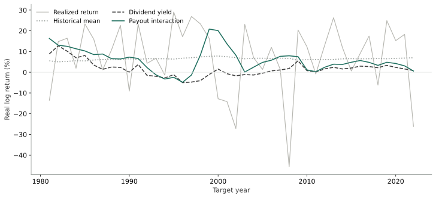
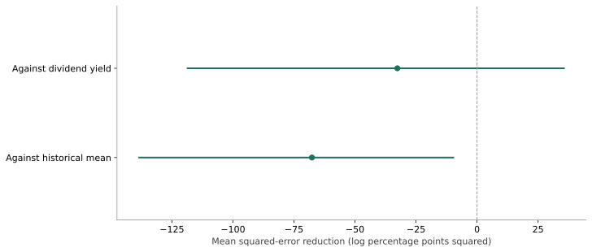
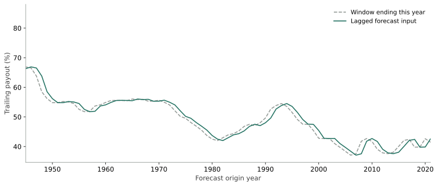

Extension / Annual forecasting audit
Does payout information improve forecasts?
The payout-interaction model does not improve on dividend yield over 1981–2022: its out-of-sample R² against yield is -0.108.
This is a historical forecasting comparison, not an investment recommendation. The paper motivates the hypothesis; it does not guarantee forecasting gains.
Forecast accuracy
Charts and tables scroll horizontally on narrow screens.
Lower RMSE and MAE are better. Positive out-of-sample R² means lower squared error than the named benchmark. R² is reported as a proportion.
| Model | Years | RMSE (log pp) | MAE (log pp) | OOS R² vs mean | OOS R² vs yield |
|---|---|---|---|---|---|
| Historical mean | 42 | 16.329 | 12.961 | 0.000 | 0.116 |
| Dividend yield | 42 | 17.367 | 14.141 | -0.131 | 0.000 |
| Payout interaction | 42 | 18.283 | 14.336 | -0.254 | -0.108 |

How uncertain is the difference?
| Model | Benchmark | MSE reduction (log pp²) | 95% lower | 95% upper |
|---|---|---|---|---|
| Historical mean | Dividend yield | 34.998 | -34.925 | 132.037 |
| Dividend yield | Historical mean | -34.998 | -132.037 | 34.925 |
| Payout interaction | Historical mean | -67.639 | -138.786 | -9.363 |
| Payout interaction | Dividend yield | -32.641 | -118.936 | 35.971 |

A forecast made with earlier outcomes
Initial training uses 1946–1980 returns. At each year-end t we estimate OLS on outcomes through t, predict t+1, then expand the training window. All three models share the same 42 evaluation years.
- Historical mean: average return in the current training sample.
- Dividend yield: intercept plus log(D/P) at the forecast origin.
- Payout interaction: yield, lagged payout and their product, plus an intercept. Predictors are centered using that origin’s training sample only.
Payout divides summed dividends by summed earnings across 10 years ending 1 year before the origin. The target is log((next-year real price + next-year real dividends) / current real price). Forecasts are not clipped.
Interpretation and limitations
The authors’ series contains revised historical data, not historical vintages. This is pseudo-out-of-sample evaluation. The 2021–2022 years were previously explored in a separate fixed-coefficient experiment. This implementation retains the agreed design, but the evaluation must not be described as entirely unseen. With a small annual sample, uncertainty is substantial. No portfolio allocation, transaction costs or trading profitability are tested.
The three supplied Table 4 smoothing constants are excluded from this extension. Instructor approval is not established by this implementation.
Inputs and timing checks
| check | passed | blocking | detail |
|---|---|---|---|
| Required columns present | True | True | missing: [] |
| Years are integers | True | True | 152 rows |
| Years unique, ascending and contiguous | True | True | 1871-2022 |
| All required values finite (no silent gaps) | True | True | nonfinite: [] |
| Prices, dividends and CPI strictly positive | True | True | [] |
| Real series = nominal / CPI with one fixed scale | True | True | scale 246.524; max relative deviation 2.22e-16 |
| D_nom_WG vs D_nom (payout numerator definition) | True | False | max relative difference 0.00e+00; payout uses D_nom_WG / E_nom_WG |
| Future data leave earlier forecasts unchanged | True | True | After 1980; maximum forecast change 0.00e+00 |
| All training cutoffs precede target years | True | True | Every model at every evaluation origin |
| Payout windows end before forecast origin | True | True | Lag 1 year(s) |

Inspect every forecast
| model | origin_year | target_year | train_start | train_end | train_n | Actual (log %) | Forecast (log %) | Error (log pp) | payout_first_year | payout_last_year |
|---|---|---|---|---|---|---|---|---|---|---|
| Historical mean | 1980 | 1981 | 1946 | 1980 | 35 | -13.515 | 5.530 | -19.044 | 1970 | 1979 |
| Dividend yield | 1980 | 1981 | 1946 | 1980 | 35 | -13.515 | 8.889 | -22.403 | 1970 | 1979 |
| Payout interaction | 1980 | 1981 | 1946 | 1980 | 35 | -13.515 | 16.284 | -29.799 | 1970 | 1979 |
| Historical mean | 1981 | 1982 | 1946 | 1981 | 36 | 14.779 | 5.000 | 9.779 | 1971 | 1980 |
| Dividend yield | 1981 | 1982 | 1946 | 1981 | 36 | 14.779 | 12.744 | 2.035 | 1971 | 1980 |
| Payout interaction | 1981 | 1982 | 1946 | 1981 | 36 | 14.779 | 13.027 | 1.752 | 1971 | 1980 |
| Historical mean | 1982 | 1983 | 1946 | 1982 | 37 | 16.420 | 5.265 | 11.155 | 1972 | 1981 |
| Dividend yield | 1982 | 1983 | 1946 | 1982 | 37 | 16.420 | 10.169 | 6.251 | 1972 | 1981 |
| Payout interaction | 1982 | 1983 | 1946 | 1982 | 37 | 16.420 | 12.502 | 3.918 | 1972 | 1981 |
| Historical mean | 1983 | 1984 | 1946 | 1983 | 38 | 1.922 | 5.558 | -3.636 | 1973 | 1982 |
| Dividend yield | 1983 | 1984 | 1946 | 1983 | 38 | 1.922 | 6.987 | -5.065 | 1973 | 1982 |
| Payout interaction | 1983 | 1984 | 1946 | 1983 | 38 | 1.922 | 11.330 | -9.408 | 1973 | 1982 |
| Historical mean | 1984 | 1985 | 1946 | 1984 | 39 | 23.318 | 5.465 | 17.853 | 1974 | 1983 |
| Dividend yield | 1984 | 1985 | 1946 | 1984 | 39 | 23.318 | 8.087 | 15.231 | 1974 | 1983 |
| Payout interaction | 1984 | 1985 | 1946 | 1984 | 39 | 23.318 | 10.282 | 13.036 | 1974 | 1983 |
| Historical mean | 1985 | 1986 | 1946 | 1985 | 40 | 15.916 | 5.911 | 10.004 | 1975 | 1984 |
| Dividend yield | 1985 | 1986 | 1946 | 1985 | 40 | 15.916 | 3.468 | 12.448 | 1975 | 1984 |
| Payout interaction | 1985 | 1986 | 1946 | 1985 | 40 | 15.916 | 8.531 | 7.384 | 1975 | 1984 |
| Historical mean | 1986 | 1987 | 1946 | 1986 | 41 | 1.172 | 6.155 | -4.984 | 1976 | 1985 |
| Dividend yield | 1986 | 1987 | 1946 | 1986 | 41 | 1.172 | 1.408 | -0.236 | 1976 | 1985 |
| Payout interaction | 1986 | 1987 | 1946 | 1986 | 41 | 1.172 | 8.797 | -7.625 | 1976 | 1985 |
| Historical mean | 1987 | 1988 | 1946 | 1987 | 42 | 10.816 | 6.037 | 4.779 | 1977 | 1986 |
| Dividend yield | 1987 | 1988 | 1946 | 1987 | 42 | 10.816 | 2.525 | 8.291 | 1977 | 1986 |
| Payout interaction | 1987 | 1988 | 1946 | 1987 | 42 | 10.816 | 6.554 | 4.262 | 1977 | 1986 |
| Historical mean | 1988 | 1989 | 1946 | 1988 | 43 | 22.636 | 6.148 | 16.488 | 1978 | 1987 |
| Dividend yield | 1988 | 1989 | 1946 | 1988 | 43 | 22.636 | 2.355 | 20.282 | 1978 | 1987 |
| Payout interaction | 1988 | 1989 | 1946 | 1988 | 43 | 22.636 | 6.401 | 16.235 | 1978 | 1987 |
| Historical mean | 1989 | 1990 | 1946 | 1989 | 44 | -9.117 | 6.523 | -15.639 | 1979 | 1988 |
| Dividend yield | 1989 | 1990 | 1946 | 1989 | 44 | -9.117 | 0.016 | -9.132 | 1979 | 1988 |
| Payout interaction | 1989 | 1990 | 1946 | 1989 | 44 | -9.117 | 7.298 | -16.415 | 1979 | 1988 |
| Historical mean | 1990 | 1991 | 1946 | 1990 | 45 | 23.220 | 6.175 | 17.045 | 1980 | 1989 |
| Dividend yield | 1990 | 1991 | 1946 | 1990 | 45 | 23.220 | 3.738 | 19.481 | 1980 | 1989 |
| Payout interaction | 1990 | 1991 | 1946 | 1990 | 45 | 23.220 | 6.624 | 16.595 | 1980 | 1989 |
| Historical mean | 1991 | 1992 | 1946 | 1991 | 46 | 4.311 | 6.546 | -2.235 | 1981 | 1990 |
| Dividend yield | 1991 | 1992 | 1946 | 1991 | 46 | 4.311 | -1.523 | 5.834 | 1981 | 1990 |
| Payout interaction | 1991 | 1992 | 1946 | 1991 | 46 | 4.311 | 2.247 | 2.064 | 1981 | 1990 |
| Historical mean | 1992 | 1993 | 1946 | 1992 | 47 | 6.767 | 6.498 | 0.269 | 1982 | 1991 |
| Dividend yield | 1992 | 1993 | 1946 | 1992 | 47 | 6.767 | -1.942 | 8.709 | 1982 | 1991 |
| Payout interaction | 1992 | 1993 | 1946 | 1992 | 47 | 6.767 | -1.246 | 8.013 | 1982 | 1991 |
| Historical mean | 1993 | 1994 | 1946 | 1993 | 48 | -1.364 | 6.504 | -7.867 | 1983 | 1992 |
| Dividend yield | 1993 | 1994 | 1946 | 1993 | 48 | -1.364 | -2.737 | 1.374 | 1983 | 1992 |
| Payout interaction | 1993 | 1994 | 1946 | 1993 | 48 | -1.364 | -3.275 | 1.911 | 1983 | 1992 |
| Historical mean | 1994 | 1995 | 1946 | 1994 | 49 | 29.057 | 6.343 | 22.714 | 1984 | 1993 |
| Dividend yield | 1994 | 1995 | 1946 | 1994 | 49 | 29.057 | -1.174 | 30.230 | 1984 | 1993 |
| Payout interaction | 1994 | 1995 | 1946 | 1994 | 49 | 29.057 | -2.437 | 31.494 | 1984 | 1993 |
| Historical mean | 1995 | 1996 | 1946 | 1995 | 50 | 17.175 | 6.797 | 10.377 | 1985 | 1994 |
| Dividend yield | 1995 | 1996 | 1946 | 1995 | 50 | 17.175 | -5.006 | 22.180 | 1985 | 1994 |
| Payout interaction | 1995 | 1996 | 1946 | 1995 | 50 | 17.175 | -4.858 | 22.032 | 1985 | 1994 |
| Historical mean | 1996 | 1997 | 1946 | 1996 | 51 | 26.905 | 7.001 | 19.904 | 1986 | 1995 |
| Dividend yield | 1996 | 1997 | 1946 | 1996 | 51 | 26.905 | -4.740 | 31.645 | 1986 | 1995 |
| Payout interaction | 1996 | 1997 | 1946 | 1996 | 51 | 26.905 | -1.324 | 28.229 | 1986 | 1995 |
| Historical mean | 1997 | 1998 | 1946 | 1997 | 52 | 23.350 | 7.384 | 15.967 | 1987 | 1996 |
| Dividend yield | 1997 | 1998 | 1946 | 1997 | 52 | 23.350 | -4.053 | 27.404 | 1987 | 1996 |
| Payout interaction | 1997 | 1998 | 1946 | 1997 | 52 | 23.350 | 8.238 | 15.112 | 1987 | 1996 |
| Historical mean | 1998 | 1999 | 1946 | 1998 | 53 | 16.317 | 7.685 | 8.632 | 1988 | 1997 |
| Dividend yield | 1998 | 1999 | 1946 | 1998 | 53 | 16.317 | -1.065 | 17.382 | 1988 | 1997 |
| Payout interaction | 1998 | 1999 | 1946 | 1998 | 53 | 16.317 | 20.834 | -4.517 | 1988 | 1997 |
| Historical mean | 1999 | 2000 | 1946 | 1999 | 54 | -12.797 | 7.845 | -20.641 | 1989 | 1998 |
| Dividend yield | 1999 | 2000 | 1946 | 1999 | 54 | -12.797 | 1.532 | -14.329 | 1989 | 1998 |
| Payout interaction | 1999 | 2000 | 1946 | 1999 | 54 | -12.797 | 20.088 | -32.885 | 1989 | 1998 |
| Historical mean | 2000 | 2001 | 1946 | 2000 | 55 | -14.153 | 7.469 | -21.623 | 1990 | 1999 |
| Dividend yield | 2000 | 2001 | 1946 | 2000 | 55 | -14.153 | -0.712 | -13.441 | 1990 | 1999 |
| Payout interaction | 2000 | 2001 | 1946 | 2000 | 55 | -14.153 | 13.684 | -27.837 | 1990 | 1999 |
| Historical mean | 2001 | 2002 | 1946 | 2001 | 56 | -27.152 | 7.083 | -34.235 | 1991 | 2000 |
| Dividend yield | 2001 | 2002 | 1946 | 2001 | 56 | -27.152 | -1.723 | -25.428 | 1991 | 2000 |
| Payout interaction | 2001 | 2002 | 1946 | 2001 | 56 | -27.152 | 8.227 | -35.379 | 1991 | 2000 |
| Historical mean | 2002 | 2003 | 1946 | 2002 | 57 | 23.102 | 6.483 | 16.619 | 1992 | 2001 |
| Dividend yield | 2002 | 2003 | 1946 | 2002 | 57 | 23.102 | -1.123 | 24.224 | 1992 | 2001 |
| Payout interaction | 2002 | 2003 | 1946 | 2002 | 57 | 23.102 | 0.089 | 23.013 | 1992 | 2001 |
| Historical mean | 2003 | 2004 | 1946 | 2003 | 58 | 7.000 | 6.769 | 0.230 | 1993 | 2002 |
| Dividend yield | 2003 | 2004 | 1946 | 2003 | 58 | 7.000 | -1.314 | 8.314 | 1993 | 2002 |
| Payout interaction | 2003 | 2004 | 1946 | 2003 | 58 | 7.000 | 2.465 | 4.534 | 1993 | 2002 |
| Historical mean | 2004 | 2005 | 1946 | 2004 | 59 | 1.362 | 6.773 | -5.411 | 1994 | 2003 |
| Dividend yield | 2004 | 2005 | 1946 | 2004 | 59 | 1.362 | -0.444 | 1.806 | 1994 | 2003 |
| Payout interaction | 2004 | 2005 | 1946 | 2004 | 59 | 1.362 | 4.755 | -3.393 | 1994 | 2003 |
| Historical mean | 2005 | 2006 | 1946 | 2005 | 60 | 11.999 | 6.683 | 5.316 | 1995 | 2004 |
| Dividend yield | 2005 | 2006 | 1946 | 2005 | 60 | 11.999 | 0.666 | 11.333 | 1995 | 2004 |
| Payout interaction | 2005 | 2006 | 1946 | 2005 | 60 | 11.999 | 5.815 | 6.183 | 1995 | 2004 |
| Historical mean | 2006 | 2007 | 1946 | 2006 | 61 | 1.339 | 6.770 | -5.431 | 1996 | 2005 |
| Dividend yield | 2006 | 2007 | 1946 | 2006 | 61 | 1.339 | 1.112 | 0.227 | 1996 | 2005 |
| Payout interaction | 2006 | 2007 | 1946 | 2006 | 61 | 1.339 | 7.681 | -6.341 | 1996 | 2005 |
| Historical mean | 2007 | 2008 | 1946 | 2007 | 62 | -45.587 | 6.683 | -52.269 | 1997 | 2006 |
| Dividend yield | 2007 | 2008 | 1946 | 2007 | 62 | -45.587 | 1.779 | -47.366 | 1997 | 2006 |
| Payout interaction | 2007 | 2008 | 1946 | 2007 | 62 | -45.587 | 7.942 | -53.529 | 1997 | 2006 |
| Historical mean | 2008 | 2009 | 1946 | 2008 | 63 | 20.374 | 5.853 | 14.521 | 1998 | 2007 |
| Dividend yield | 2008 | 2009 | 1946 | 2008 | 63 | 20.374 | 5.488 | 14.887 | 1998 | 2007 |
| Payout interaction | 2008 | 2009 | 1946 | 2008 | 63 | 20.374 | 7.508 | 12.867 | 1998 | 2007 |
| Historical mean | 2009 | 2010 | 1946 | 2009 | 64 | 12.336 | 6.080 | 6.256 | 1999 | 2008 |
| Dividend yield | 2009 | 2010 | 1946 | 2009 | 64 | 12.336 | 0.798 | 11.537 | 1999 | 2008 |
| Payout interaction | 2009 | 2010 | 1946 | 2009 | 64 | 12.336 | 1.145 | 11.191 | 1999 | 2008 |
| Historical mean | 2010 | 2011 | 1946 | 2010 | 65 | -0.843 | 6.176 | -7.019 | 2000 | 2009 |
| Dividend yield | 2010 | 2011 | 1946 | 2010 | 65 | -0.843 | 0.069 | -0.912 | 2000 | 2009 |
| Payout interaction | 2010 | 2011 | 1946 | 2010 | 65 | -0.843 | 0.268 | -1.111 | 2000 | 2009 |
| Historical mean | 2011 | 2012 | 1946 | 2011 | 66 | 13.021 | 6.070 | 6.952 | 2001 | 2010 |
| Dividend yield | 2011 | 2012 | 1946 | 2011 | 66 | 13.021 | 1.629 | 11.393 | 2001 | 2010 |
| Payout interaction | 2011 | 2012 | 1946 | 2011 | 66 | 13.021 | 2.407 | 10.615 | 2001 | 2010 |
| Historical mean | 2012 | 2013 | 1946 | 2012 | 67 | 26.314 | 6.173 | 20.141 | 2002 | 2011 |
| Dividend yield | 2012 | 2013 | 1946 | 2012 | 67 | 26.314 | 2.379 | 23.935 | 2002 | 2011 |
| Payout interaction | 2012 | 2013 | 1946 | 2012 | 67 | 26.314 | 3.889 | 22.425 | 2002 | 2011 |
| Historical mean | 2013 | 2014 | 1946 | 2013 | 68 | 11.931 | 6.470 | 5.462 | 2003 | 2012 |
| Dividend yield | 2013 | 2014 | 1946 | 2013 | 68 | 11.931 | 1.586 | 10.346 | 2003 | 2012 |
| Payout interaction | 2013 | 2014 | 1946 | 2013 | 68 | 11.931 | 3.763 | 8.168 | 2003 | 2012 |
| Historical mean | 2014 | 2015 | 1946 | 2014 | 69 | 0.644 | 6.549 | -5.904 | 2004 | 2013 |
| Dividend yield | 2014 | 2015 | 1946 | 2014 | 69 | 0.644 | 2.045 | -1.401 | 2004 | 2013 |
| Payout interaction | 2014 | 2015 | 1946 | 2014 | 69 | 0.644 | 4.819 | -4.175 | 2004 | 2013 |
| Historical mean | 2015 | 2016 | 1946 | 2015 | 70 | 9.075 | 6.464 | 2.610 | 2005 | 2014 |
| Dividend yield | 2015 | 2016 | 1946 | 2015 | 70 | 9.075 | 2.944 | 6.130 | 2005 | 2014 |
| Payout interaction | 2015 | 2016 | 1946 | 2015 | 70 | 9.075 | 5.667 | 3.407 | 2005 | 2014 |
| Historical mean | 2016 | 2017 | 1946 | 2016 | 71 | 17.474 | 6.501 | 10.973 | 2006 | 2015 |
| Dividend yield | 2016 | 2017 | 1946 | 2016 | 71 | 17.474 | 2.742 | 14.732 | 2006 | 2015 |
| Payout interaction | 2016 | 2017 | 1946 | 2016 | 71 | 17.474 | 4.771 | 12.703 | 2006 | 2015 |
| Historical mean | 2017 | 2018 | 1946 | 2017 | 72 | -6.211 | 6.654 | -12.865 | 2007 | 2016 |
| Dividend yield | 2017 | 2018 | 1946 | 2017 | 72 | -6.211 | 2.192 | -8.403 | 2007 | 2016 |
| Payout interaction | 2017 | 2018 | 1946 | 2017 | 72 | -6.211 | 3.316 | -9.527 | 2007 | 2016 |
| Historical mean | 2018 | 2019 | 1946 | 2018 | 73 | 24.897 | 6.477 | 18.419 | 2008 | 2017 |
| Dividend yield | 2018 | 2019 | 1946 | 2018 | 73 | 24.897 | 3.326 | 21.571 | 2008 | 2017 |
| Payout interaction | 2018 | 2019 | 1946 | 2018 | 73 | 24.897 | 4.808 | 20.089 | 2008 | 2017 |
| Historical mean | 2019 | 2020 | 1946 | 2019 | 74 | 15.252 | 6.726 | 8.526 | 2009 | 2018 |
| Dividend yield | 2019 | 2020 | 1946 | 2019 | 74 | 15.252 | 2.356 | 12.896 | 2009 | 2018 |
| Payout interaction | 2019 | 2020 | 1946 | 2019 | 74 | 15.252 | 4.235 | 11.017 | 2009 | 2018 |
| Historical mean | 2020 | 2021 | 1946 | 2020 | 75 | 18.277 | 6.840 | 11.437 | 2010 | 2019 |
| Dividend yield | 2020 | 2021 | 1946 | 2020 | 75 | 18.277 | 1.584 | 16.692 | 2010 | 2019 |
| Payout interaction | 2020 | 2021 | 1946 | 2020 | 75 | 18.277 | 3.077 | 15.199 | 2010 | 2019 |
| Historical mean | 2021 | 2022 | 1946 | 2021 | 76 | -26.147 | 6.990 | -33.137 | 2011 | 2020 |
| Dividend yield | 2021 | 2022 | 1946 | 2021 | 76 | -26.147 | 0.846 | -26.993 | 2011 | 2020 |
| Payout interaction | 2021 | 2022 | 1946 | 2021 | 76 | -26.147 | 0.590 | -26.737 | 2011 | 2020 |
Reproduce and inspect
forecasts · coefficients · features · metrics · loss comparisons · validation · Source and code hashes
uv sync --frozen uv run doit site uv run python src/serve_review.py
Source: authors’ U.S. annual dataset, Mendeley version 1. Dates and bootstrap settings live in config/extension.json. No credentials are needed for this build.